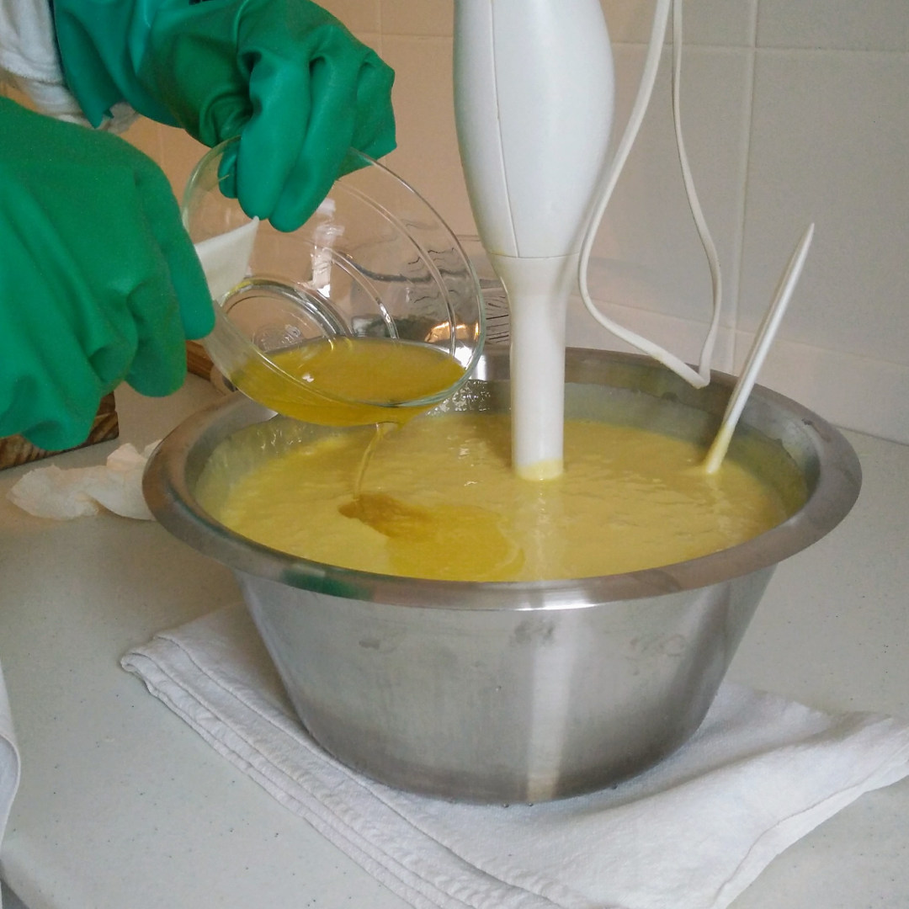
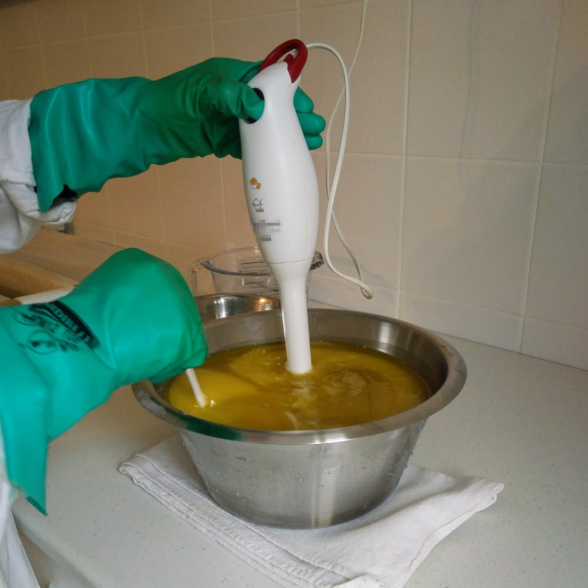
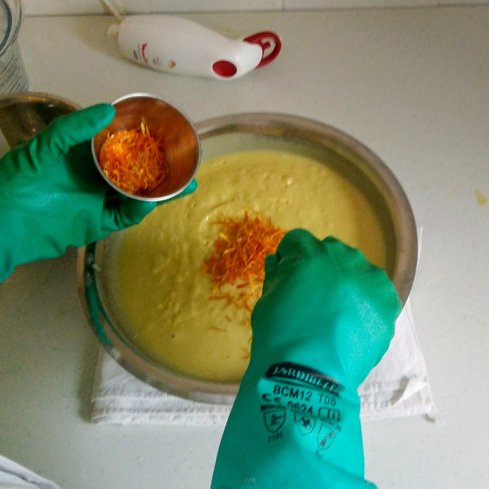
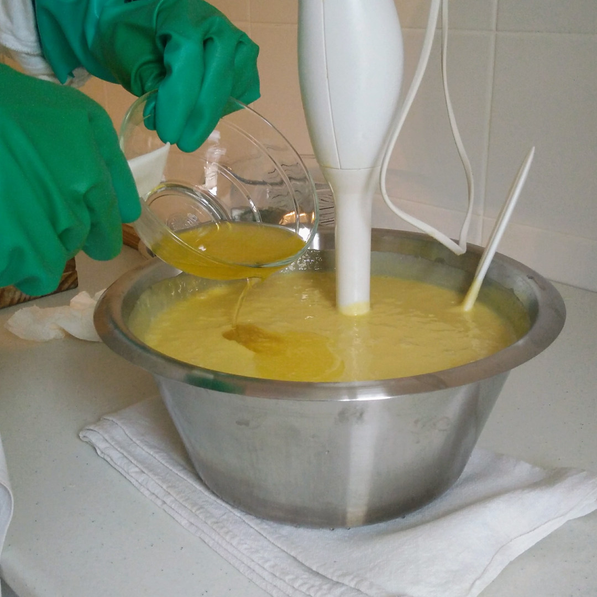
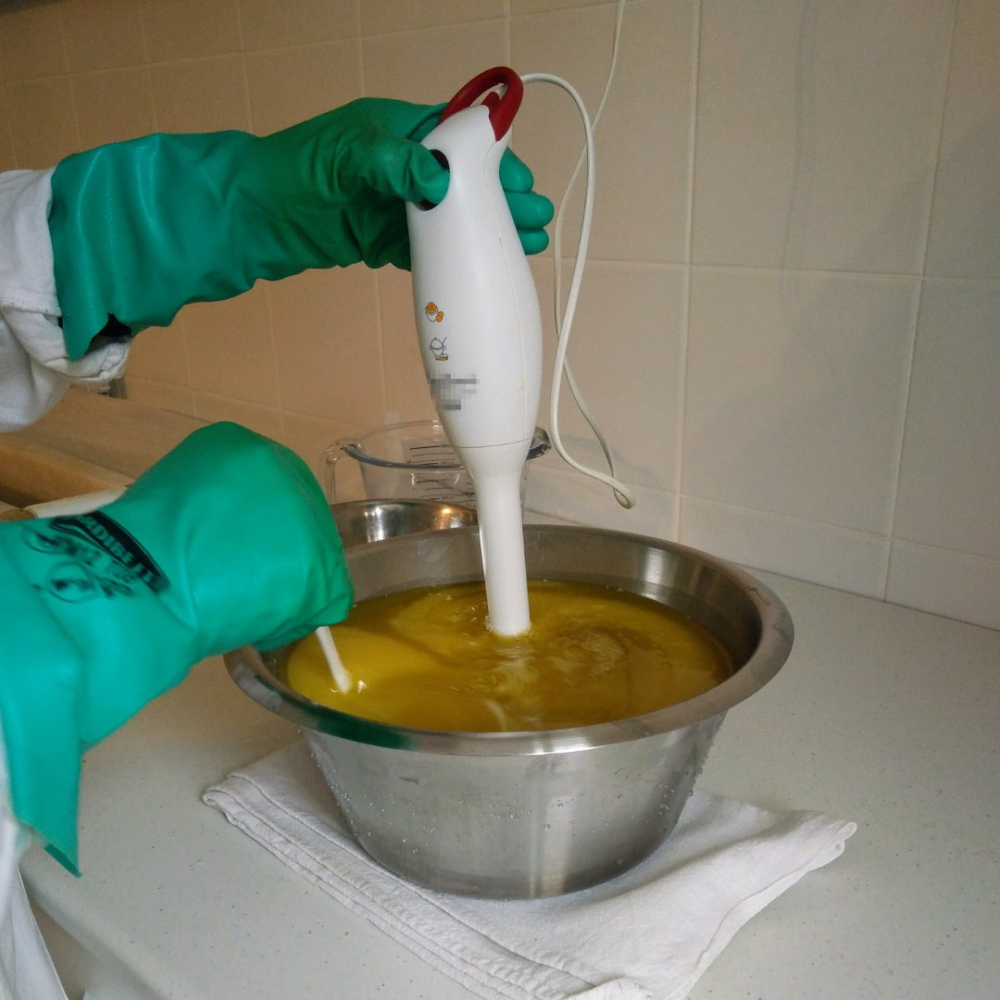
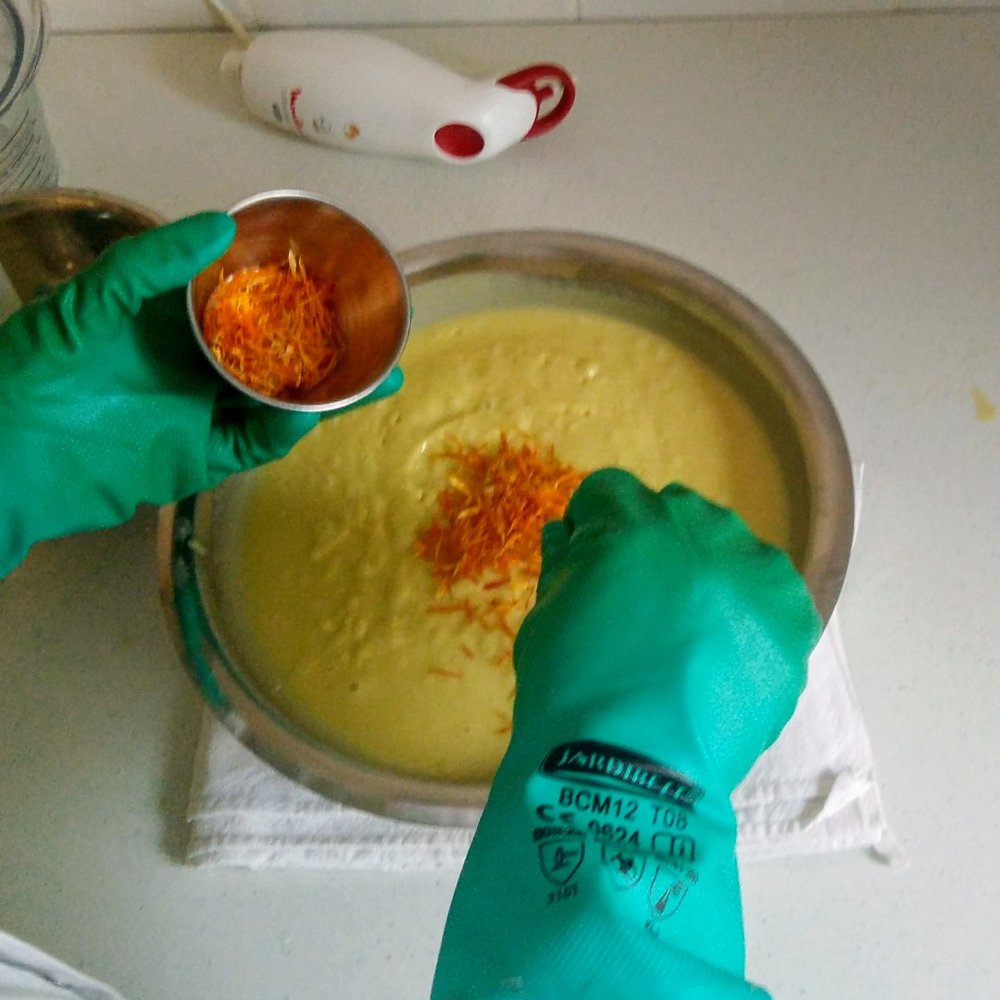
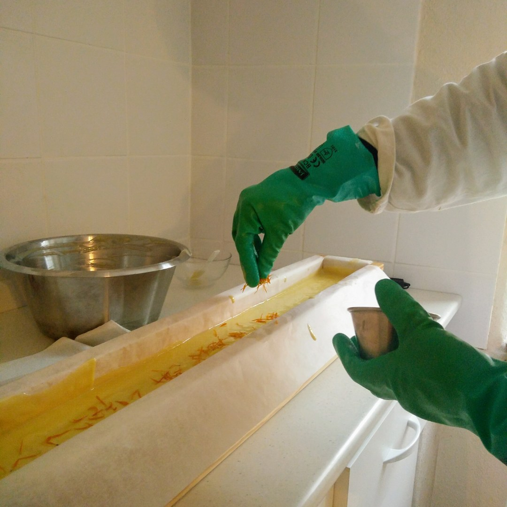
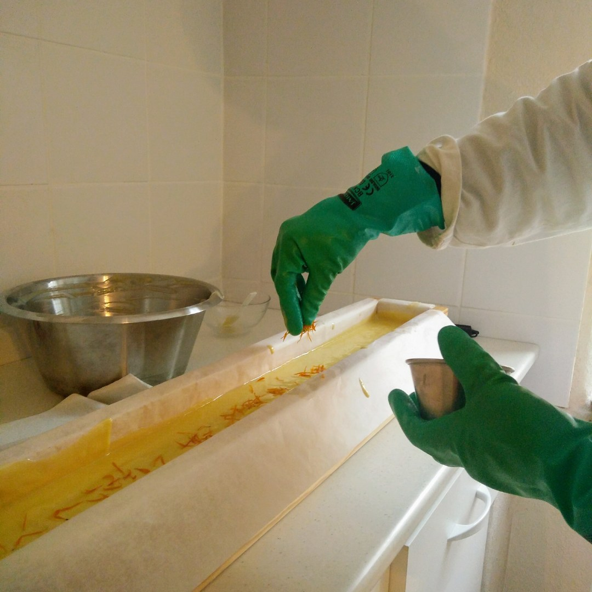

La saponification à froid
Cette méthode de fabrication artisanale garantit la présence de glycérine dans le savon et permet de conserver une grande partie des propriétés bienfaisantes des huiles, beurres et huiles essentielles utilisés. C'est une méthode écologique dont le procédé de fabrication est sobre en énergie.
Création du savon Fanny

 





 



Les beurres de coco et de karité fondent doucement au bain-marie. Température: 35°C - 40°C.
En attendant, je pèse les huiles essentielles et le macérât de calendula qui sera ajouté en surgraissage.
J'incorpore la solution de soude préparée en amont avec les huiles et les beurres fondus. Le processus de saponification commence.
Méthode ancestrale d'accord, mais avec mixeur.
La pâte épaissit et forme une trace. C'est le moment d'ajouter les huiles essentielles et le macérât.
Après un dernier tour de mixeur j'ajoute quelques pétales de calendula pour faire joli !
La pâte est coulée dans le grand moule chemisé.
Quelques pétales de plus ! Le moule sera ensuite isolé thermiquement pendant 24 à 48h.
Le pain de savon est démoulé puis coupé en tranches.
Ils sècheront durant 4 à 6 semaines dans l'armoire de cure.
La saponification
La saponification est la réaction chimique qui transforme : huile + soude => savon + glycérine Il ne reste aucune trace de soude dans un savon "fini".
Le surgras
En cours de fabrication, j'enrichis mes savons d'huiles aux vertus apaisantes, régénérantes, et nourrissantes. Ces huiles, ajoutées aux corps gras déjà saponifiés viennent sur-graisser le savon. Un savon surgras est un savon qui ne se contente pas de laver, il permet aussi au film hydrolipidique de la peau de se restaurer plus rapidement.